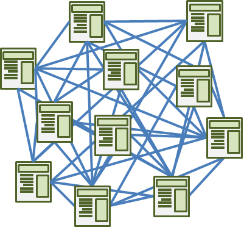

También conocida como link analysis o link mining, se interesa por la estructura interdocumento que forman las páginas contenidas en la Web, lo que requiere una exploración profunda de toda ella. Éste intenta descubrir un modelo a partir de la topología de enlaces de la red y puede ser útil para clasificar o agrupar documentos.
